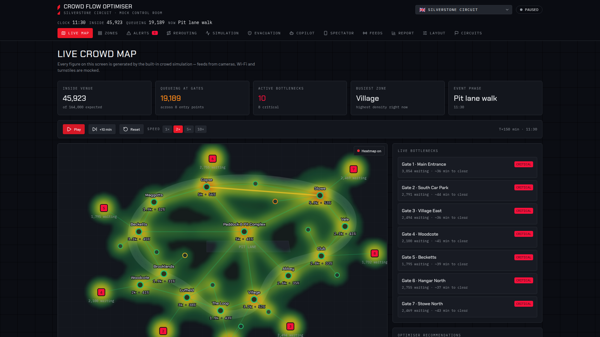
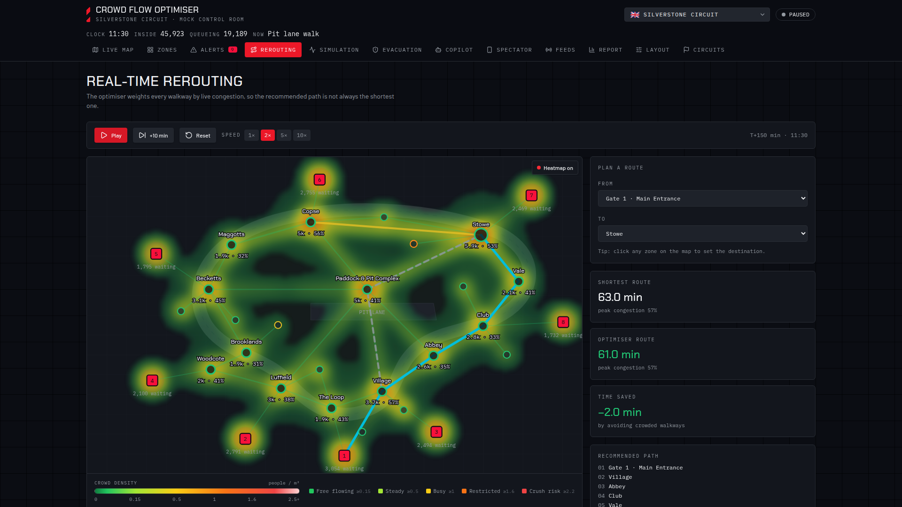

Crowd intelligence, before the crush
 CROWDFLOW
CROWDFLOW
Move the crowd
before it becomes
a crisis.
Predictive crowd management for Grand Prix circuits—turning live movement into
safe, timely reroutes.
FORECAST · 15 MIN
Gate 3 pressure rising
Reroute 20% via Village East
01 · The problem
Operations see the crowd.
They rarely see what happens next.
01
◌
Signals arrive fragmented
Cameras, gates, Wi-Fi and staff reports tell different pieces of the story.
→
02
△
Pressure compounds
A normal queue can become a critical bottleneck before the whole venue sees it.
→
03
!
Response arrives late
Generic announcements react to symptoms—not the movement causing them.
“By the time congestion is obvious, your options are already shrinking.”
02 · The closed loop
From scattered signals to one
safe, testable decision.
01Observeanonymous signals
→
02Understandlive crowd state
→
03Predictpressure ahead
→
04Simulatecounterfactuals
→
05Redirectsafe route
↺
06Verifymeasure impact
CROWDFLOW DECISION
Move 20% of Gate 3 arrivals via Village East
✓ SAFETY REVIEWED
The system does not just detect crowds. It tests what to do next.
03 · Reproducible proof
Same crowd.
Same seed.
One intervention.
A/B simulation at Silverstone: 6,000 spectators, 700 ticks, seed 42. Only the
intervention changes between arms.
✓ PROOF GATE PASSED
−34.7%
critical zone-seconds
−13.2%
people queued at peak
−22.2%
simultaneous critical zones
+0s
mean walk-time penalty
VERIFIED ON MAIN · `crowdflow sim ab silverstone --count 6000 --ticks 700 --seed 42`
04 · Control-room experience
See the whole venue.
Focus on what matters.
01 Density becomes a live heat layer
02 Bottlenecks rank by operational risk
03 Confidence stays visible—not implied

OPERATOR EXPERIENCE PROTOTYPE · SIMULATED CROWD DATA
05 · Decision engine
Every recommendation earns
its way onto the map.

01ForecastWhere will pressure exceed a safe band?
02CompareTest 10%, 20%, 30% and 40% diversions.
03ConstrainRespect closures, route cost and command TTL.
04Safety vetoNothing dispatches without an explicit verdict.
05MeasureFeed the outcome back into the next tick.
06 · Original technical edge
Not a chatbot on a map.
A verifiable crowd engine.
CAMERASTURNSTILESWI-FIOPTED-IN PHONES
↓
DETERMINISTIC CORE
STATE→PREDICT→SIMULATE→ROUTE
↓
Operatorlive decisions + confidence
Safety reviewmandatory veto seam
Spectatorsmall, actionable guidance
SAFETY mandatory veto
PRIVACY on-device noise
MESH protocol simulated
141 passing tests
07 · Completeness + functionality
We know exactly what is real—
and what the pilot must prove.
RUNNING TODAY
- ✓Seeded crowd simulation + A/B gate
- ✓Prediction, intervention, routing + safety
- ✓Bun API + live WebSocket dashboard
- ✓Spectator route feed + six mobile states
- ✓Silverstone venue graph + circuit importer
PILOT MILESTONES
- 01Connect one real venue signal
- 02Calibrate widths, crossings + constraints
- 03Wire phone sensing + native mesh radios
- 04Run a shadow-mode event
- 05Measure predicted vs. observed impact
The ask
Give us one circuit.
One event.
One chance to see ahead.
1venue pack
1live signal
1shadow-mode session
→ A measured pilot, not a promise.
CROWDFLOW · SAFER MOVEMENT, IN REAL TIME